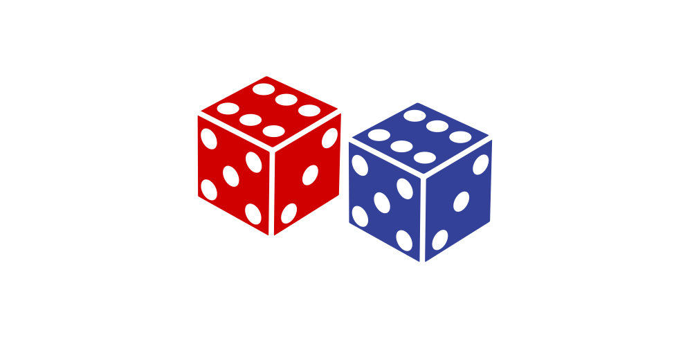

BC1101
Syllabus
Slides
On this page
Part 1. Fundamentals
1. Course Overview
2. Variables
3. Frequency
4. Central Tendency
5. Variability
6.
\(z\)
-Scores
7. Probability
8. Sampling
Part 2. Inferential statistics
9. Hypothesis testing
10. Hypothesis testing pt. 2
11. The
\(t\)
test
Report an issue
Slides
Part 1. Fundamentals
1. Course Overview
Textbook
Lectures
Recitation
Exams
Final grades
Other stuff
2. Variables
Statistics: Why? How? What?
Measuring things
Populations & samples
Learning checks
3. Frequency
Frequency
Frequency tables
Frequency graphs
Learning checks
4. Central Tendency
Mode
Median
Mean
Distributions
Learning checks
5. Variability
Variability
Range
Sum of squares, variance, SD
Degrees of freedom
Learning checks
6.
\(z\)
-Scores
\(z\)
-scores
Standardized distributions
\(z\)
-scores & making inferences
Learning checks
7. Probability

Probability basics
Sampling
Probability and distributions
Probability and
\(z\)
-scores
Learning checks
8. Sampling
Sampling error
Distribution of sample means
Central Limit Theorem
Learning checks
Part 2. Inferential statistics
9. Hypothesis testing
Recap
Making inferences
Hypothesis testing
Learning check
10. Hypothesis testing pt. 2
Inferential errors
Effect size
Statistical power
Learning checks
11. The
\(t\)
test
\(t\)
vs.
\(z\)
The
\(t\)
distribution
The
\(t\)
-test
Learning checks